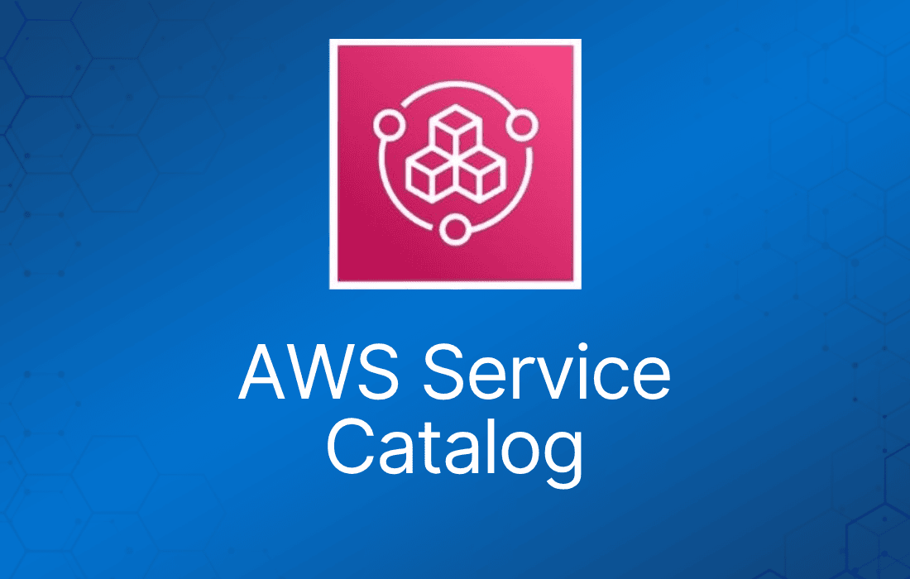

AWS Service Catalog 让组织能够创建和管理经批准可在 AWS 上使用的 IT 服务目录。
这些 IT 服务可以涵盖从虚拟机镜像、服务器、软件、数据库到完整的多层应用架构的一切内容。
AWS Service Catalog 允许组织集中管理常用部署的 IT 服务，帮助组织实现一致的治理并满足合规要求。
最终用户只需遵循组织设置的约束，即可快速部署他们所需的、经过批准的 IT 服务。
AWS Service Catalog 支持以下类型的用户：
- 目录管理员（administrator） – 管理产品（应用和服务）目录，将它们组织到 portfolio 中并向最终用户授予访问权限。目录管理员负责准备 AWS CloudFormation 模板、配置约束，以及管理分配给产品的 IAM role，以实现高级资源管理。
- 最终用户 – 从 IT 部门或经理处获得 AWS 凭证，使用 AWS Management Console 启动他们已被授予访问权限的产品。
产品（Product）：
- 产品是你希望可在 AWS 上部署的 IT 服务。
- 一个产品由一个或多个 AWS 资源组成，例如 EC2 实例、存储卷、数据库、监控配置和网络组件，或者是打包好的 AWS Marketplace 产品。
- AWS CloudFormation 模板定义了产品所需的 AWS 资源、资源之间的关系，以及最终用户启动产品时可填入的参数——用于配置 security group、创建 key pair 和执行其他自定义操作。
Portfolio：
- portfolio 是一组产品以及相关配置信息的集合。
- Portfolio 帮助管理谁可以使用特定产品以及如何使用。
- 借助 AWS Service Catalog，你可以为组织中每类用户创建定制化的 portfolio，并有选择地授予对相应 portfolio 的访问权限。
- 当你向 portfolio 添加产品的新版本时，该版本会自动对所有当前用户可用。
- 你还可以与其他 AWS 账户共享你的 portfolio，并允许这些账户的管理员在分发你的 portfolio 时附加额外的约束，例如限制用户可以创建的 EC2 实例类型。
- 通过组合使用 portfolio、权限、共享和约束，你可以确保用户启动的产品是按照组织的需求和标准正确配置的。
版本管理：
- AWS Service Catalog 允许你管理目录中产品的多个版本。
- 这样你就可以根据软件更新或配置变更，添加模板及相关资源的新版本。
- 当你创建产品的新版本时，更新会自动分发给所有有权访问该产品的用户，用户可以选择使用哪个版本。
权限：
- 向用户授予 portfolio 的访问权限后，该用户即可浏览 portfolio 并启动其中的产品。
- 你可以应用 AWS Identity and Access Management (IAM) 权限来控制谁可以查看和修改你的目录。IAM 权限可以分配给 IAM 用户、用户组和角色。
- 当用户启动一个分配了 IAM role 的产品时，AWS Service Catalog 会使用该角色通过 AWS CloudFormation 启动产品的云资源。
- 通过为每个产品分配 IAM role，你可以避免向用户授予执行未授权操作的权限，同时让他们能够通过目录开通资源。
约束（Constraint）：
- 约束控制产品的特定 AWS 资源可以如何部署。
- 你可以利用约束为产品施加限制，用于治理或成本控制。
- AWS Service Catalog 的约束有多种类型：启动约束（launch constraint）、通知约束（notification constraint）和模板约束（template constraint）。
- 通过启动约束，你为 portfolio 中的产品指定一个角色。该角色在启动时用于开通资源，因此你可以限制用户权限，同时不影响用户从目录开通产品的能力。
- 通知约束让你能够通过 Amazon SNS topic 接收有关堆栈事件的通知。
- 模板约束限制用户启动产品时可用的配置参数（例如 EC2 实例类型或 IP 地址范围）。借助模板约束，你可以为产品复用通用的 AWS CloudFormation 模板，并按产品或按 portfolio 对模板施加限制。
共享和导入 Portfolio
要让不在你 AWS 账户中的用户（例如属于其他组织的用户，或你组织内其他 AWS 账户的用户）可以使用你的 AWS Service Catalog 产品，你需要与他们共享你的 portfolio。
共享方式有多种，包括账户间共享、组织内共享，以及使用 stack set 部署目录。
在向其他账户共享产品和 portfolio 之前，你必须决定是共享目录的引用，还是将目录副本部署到每个接收账户中。
注意，如果选择部署副本，那么当有更新需要同步到接收账户时，你必须重新部署。
你可以使用 stack set 将目录同时部署到多个账户。如果你希望共享引用（即导入的 portfolio 版本会与原始版本保持同步），可以使用账户间共享，或者通过 AWS Organizations 共享。
当你使用账户间共享或 AWS Organizations 共享 portfolio 时，你允许另一个 AWS 账户的 AWS Service Catalog 管理员将你的 portfolio 导入其账户，并将产品分发给该账户中的最终用户。
这个导入的 portfolio 并不是独立的副本。导入 portfolio 中的产品和约束会与你对共享 portfolio（你共享出去的原始 portfolio）所做的更改保持同步。
接收方管理员（即你与其共享 portfolio 的管理员）无法更改产品或约束，但可以为最终用户添加 AWS Identity and Access Management (IAM) 访问权限。
接收方管理员可以通过以下方式将产品分发给他/她的 AWS 账户中的最终用户：
- 将 IAM 用户、用户组和角色添加到导入的 portfolio。
- 将导入 portfolio 中的产品添加到本地 portfolio——即接收方管理员创建的、属于其 AWS 账户的独立 portfolio。接收方管理员随后将 IAM 用户、用户组和角色添加到该本地 portfolio。你在共享 portfolio 中对产品应用的约束同样会存在于本地 portfolio 中。接收方管理员可以向本地 portfolio 添加额外的约束，但无法移除导入的约束。